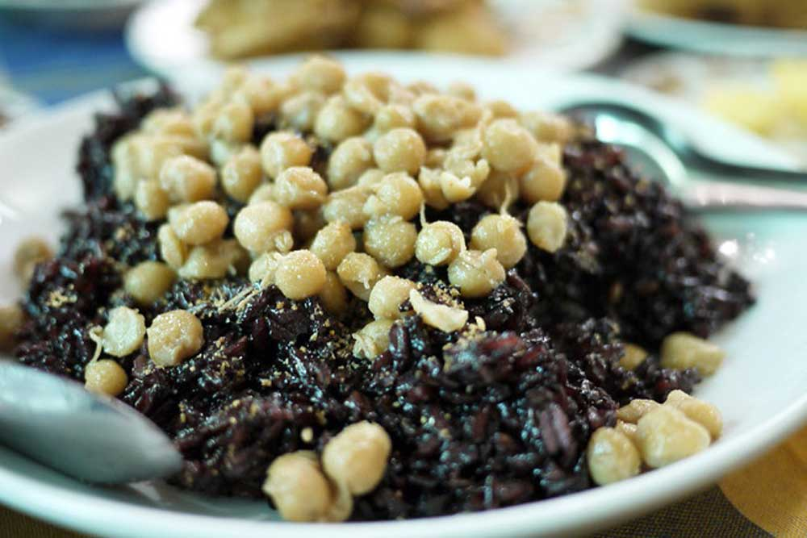
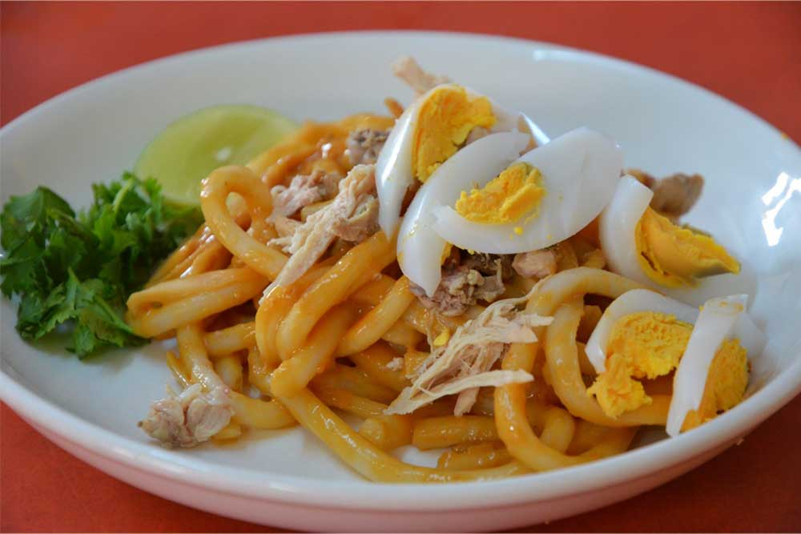
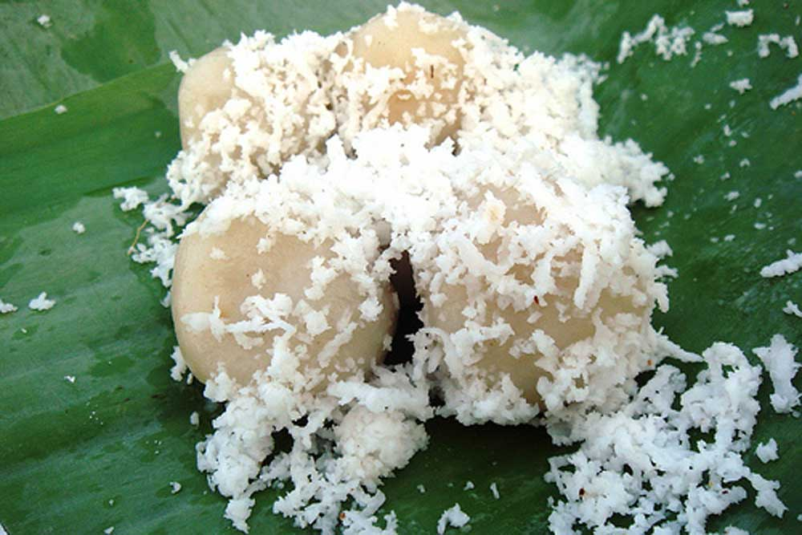
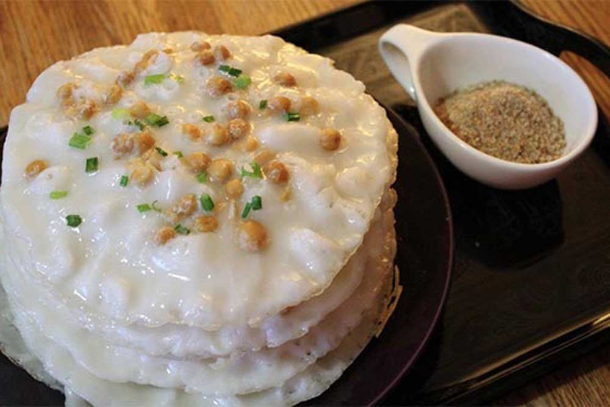
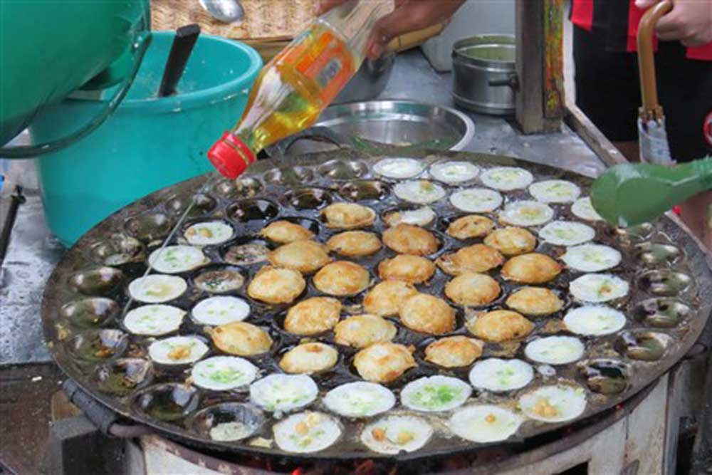

About Laphet

The pickled tea leaf that is called laphet, is eaten at all time of day, perhaps as the end of a meal or as a snack. According to the Myanmar’s tradition, the lapetthoke (pickled tea leaves salad) will be served when visitors arrive. On such occasions, a drink of local green tea and the laphettoke filled with laphet, crunchy dried peas and beans, peanuts, garlic, fried garlic, toasted sesame and green chilli will be served.
Kaut Nyin Paung
In Myanmar, Kaut Nyin Paung is mostly served for the breakfast or sometime at the tea time in the afternoon. It is usually steamed with special steamed cookies in Shan State, while the Myanmar people seem to cook it just like the normal rice. Steamed black and white glutinous rice has firmer texture and of course more delicious, while the cooked one is soft. It is usually prepared the black and white mixture of sticky rice with sesame powder, salt and coconut shreds.
Nan Gyi Thoke
Nan Gyi Thoke often called the spaghetti of Myanmar is another popular breakfast food. However it is available from morning till afternoon as some people eats regardless of time. The dish is is prepared by mixing curried chicken and the rice noodle adding onion shreds, scallions and par-boiled bean sprouts as individual’s preference. It is very delicious meal.
Mote Lone Yay Paw
Mote Lone Yay Paw is a traditional sweet rice balls. In Myanmar language, it means the snack that floats on water. It is usually stuffed with palm sugar. The food is often served during the celebration of Myanmar New Year Festival, which is also known as Thingyan.
Mont Pyar Thalet
Pyar Thalet means the honeycomb. The snack is baked with the rice flour batter as the shaped of honeycomb. It is made in two types with or without palm sugar syrup. With palm sugar syrup is made for sweet taste. But, traditionally, the mont pyar thalets are without palm sugar syrup
Mont Lin Mayar
It means the couple or husband and wife snack. It is made with rice flour batter fried in the hemispherical shape dimpled pan and joins 2 pieces This snack figure as the husband and wife.